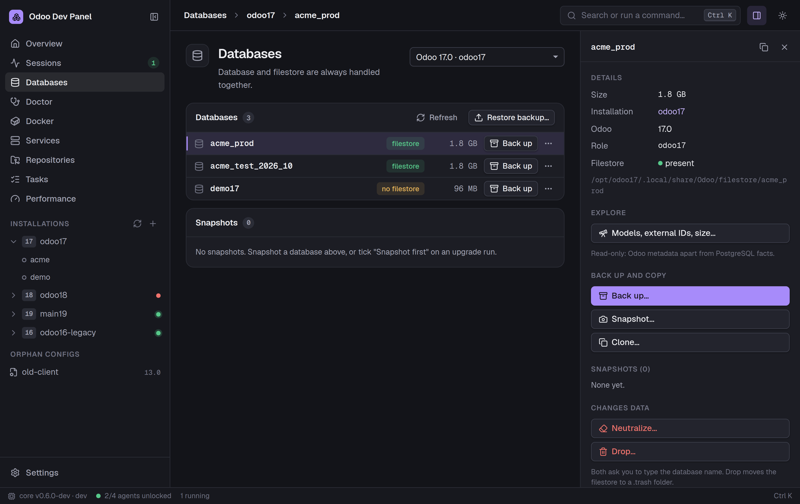

Discover
Every Odoo source tree, venv, config, database, filestore, running process and systemd unit, without changing anything.
Open source · Ubuntu 24.04 and 26.04 · Odoo 15–20
One control center for the Odoo environments on your workstation. Discover installations, diagnose and repair them, run and stop instances, and manage databases, however each one was set up.

A desktop app and the odp CLI with the same features. Every change shows its plan first.
Every Odoo source tree, venv, config, database, filestore, running process and systemd unit, without changing anything.
Start an instance as its own Linux user with a database, modules to install or upgrade, --dev flags or a shell. Odoo keeps running when the app closes.
Finds broken venvs, unreadable or exposed configs, port clashes, failed units and missing filestores, and repairs a broken venv safely.
Back up, restore, clone with filestore, neutralize and drop. Snapshot before risky work and revert in one click.
Dependency pictures, states per database, manifest checks, tests in a throwaway database. Compare two configs, installations or databases.
Create an Odoo and PostgreSQL stack with one dialog, and manage existing Odoo containers next to native installations.
New installations for Odoo 15–20 with a pinned Python, a venv, a PostgreSQL role and a first config, from scratch or from a shareable profile.
Branch, changes and sync state of every repository. Fetch, fast-forward pull, switch and clone after a plan. Nothing destructive.
Requirement status of each venv, conflicts, installs with uv as the run-as user, import validation, and dev tools.
Saved workflows such as snapshot, upgrade, test. Previewed with every command, data changes confirmed, retry from the failed step.
Start Odoo under debugpy with saved presets and attach VS Code. Every traceback line opens the file at that line.
Odoo CPU and memory, PostgreSQL sessions, locks and long queries, with a verdict. Read-only explorer of models, fields and table sizes.
The app talks to a small agent per run-as user, for example odoo17. You unlock each agent once per boot with one sudo prompt. The agent then starts and stops Odoo without further passwords.
Odoo survives app close and crashes. Only Stop ends it.
Desktop app (Tauri) │ JSON-RPC on stdio ▼ odp sidecar (Python, as you) │ Unix socket /run/odoo-dev-panel/<user>.sock ▼ odp agent (as odoo17, one per user) │ own session, output to a log file ▼ odoo-bin
Ubuntu 24.04 or 26.04, x86_64. The package brings its own Python; the machine needs neither Python nor Rust.
You get updates with sudo apt upgrade.
sudo install -d -m 0755 /etc/apt/keyrings
sudo wget -qO /etc/apt/keyrings/odoo-dev-panel.asc https://sparkdrago05.github.io/odoo-dev-panel/apt/odoo-dev-panel.asc
sudo tee /etc/apt/sources.list.d/odoo-dev-panel.sources >/dev/null <<'EOF'
Types: deb
URIs: https://sparkdrago05.github.io/odoo-dev-panel/apt
Suites: stable
Components: main
Architectures: amd64
Signed-By: /etc/apt/keyrings/odoo-dev-panel.asc
EOF
sudo apt update
sudo apt install odoo-dev-panelSigning key fingerprint: 4F64 08D8 C238 42A0 9B9E 2F84 20E5 8BB7 C1E4 F3A9
Get odoo-dev-panel_{{version}}_amd64.deb from the latest release. This way you update by hand.
sudo apt install ./odoo-dev-panel_{{version}}_amd64.debodoo-dev groupsudo usermod -aG odoo-dev "$USER"Then log out and back in, and start Odoo Dev Panel from the application menu. The app can also add you with one sudo prompt. Next steps: Install and first run.